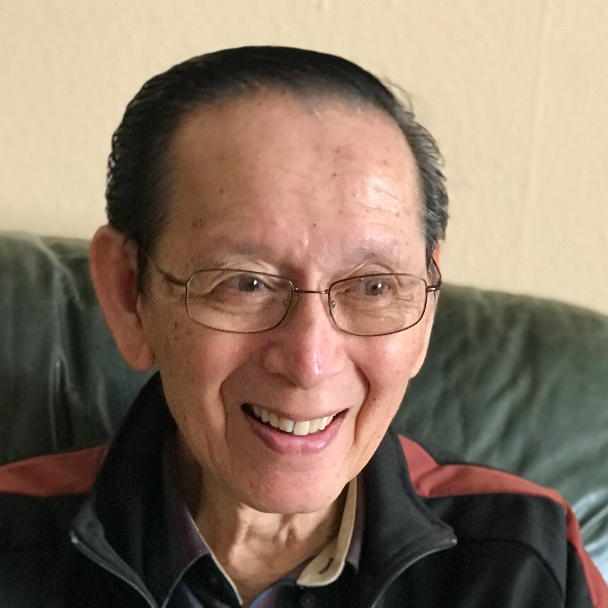
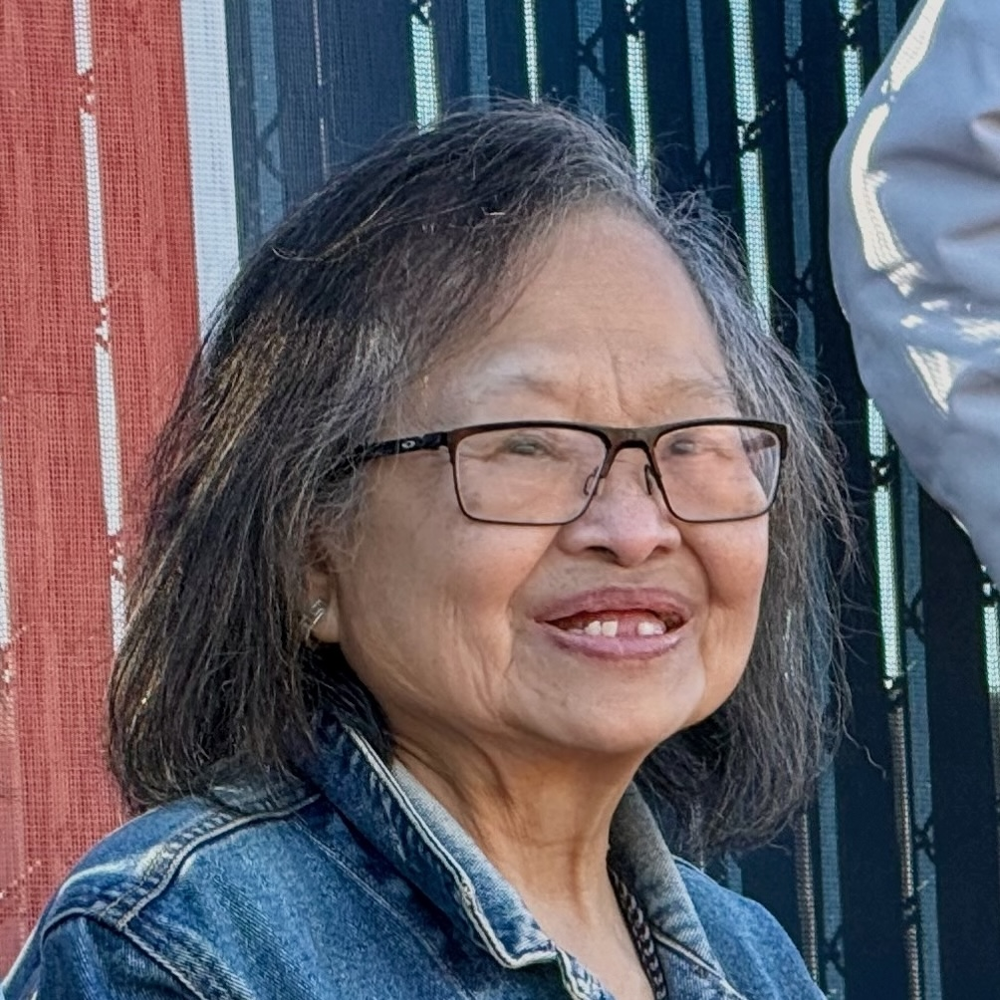

Light and Care in Service of Community
Building and strengthening relationships across generations.
The Intergenerational Connection Project brings younger volunteers together with older adults in the Bay Area Filipino community for regular conversation, companionship, practical assistance, and connection.
As people grow older, the number of people they see and talk with regularly can sometimes become smaller. Distance, changes in health or mobility, and the increasing use of technology in everyday life can make staying connected more difficult.
The people around us form an informal safety net. They answer questions, share information, help with small problems, and notice when something has changed.
Sometimes, simply having someone who checks in regularly and knows you well enough to notice can matter. This project seeks to strengthen that human connection one relationship at a time.
The project intentionally focuses on a small number of meaningful, sustained relationships rather than one-time service encounters.
Older adults are identified through trusted community partners. Volunteers are then connected with older community members who may benefit from additional social connection or practical support.
Whenever possible, volunteers spend time with the same participants regularly over several months, allowing trust and familiarity to develop.
A visit may be as simple as sitting together and talking. At another visit, a volunteer might help with a technology question, organize photographs, arrange food delivery, or help an older adult connect with family.
The needs will be different for every participant. The goal is to be useful, respectful, and present.
Intergenerational relationships are reciprocal.
Older adults bring decades of family history, professional experience, cultural traditions, and personal knowledge that younger generations can learn from.
A student might help someone learn to use a new technology and then hear stories about childhood, family, work, immigration, or what San Francisco was like decades ago. Both generations have something to share.

Building connection across generations.

Relationships built through regular conversation and time together.
This project is for volunteers who are willing to do something more demanding than participate in a single day of service.
You do not need special technical skills. You do need to be reliable, patient, curious, respectful, and willing to listen.
Volunteers should expect to build relationships over time and to show up consistently for the people with whom they are connected.
The Intergenerational Connection Project is a youth-led program of the Lux et Cura Foundation serving older adults in the Bay Area Filipino community.
Through sustained intergenerational relationships, practical assistance, and regular human connection, the project seeks to support older adults while helping younger generations learn from and remain connected with the generations who came before them.
The project is being developed as a small, relationship-centered initiative. For more information about participation and volunteer opportunities, please reach out at info@luxetcura.org.